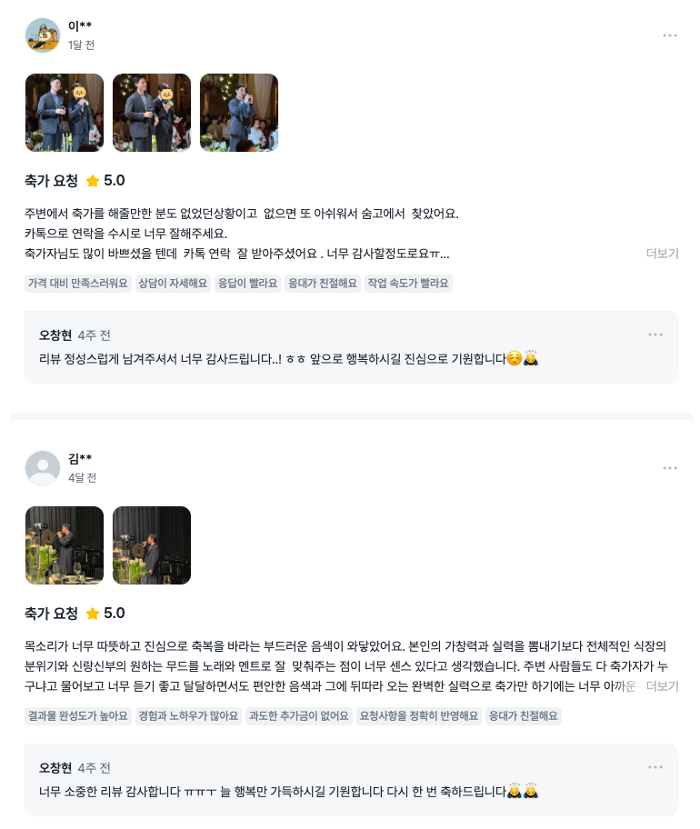

감동을 선사하는 안정적인 축가 축가전문 보컬 오창현
인생에서 가장 아름다운 순간, 신랑 신부님의 새로운 시작을 진심으로 축복하며 잊지 못할 감동과 행복을 선사합니다.
축가 진행 과정
축가 전 꼼꼼한 음향 체크와 상담을 통해 신랑신부님께서 원하는 분위기를 연출해드립니다.
실제 예식 장면
가창력을 뽐내는 무대가 아닌, 축하의 마음을 담아 예식의 전체적인 흐름과 조화를 이루는 무대를 확인해보세요.
축가 영상
예식 사진
추천 축가
두 분의 사랑 이야기에 어울리는 곡을 함께 고르고, 원하는 분위기에 맞춰 준비합니다.
이 외에도 선곡 상담 가능하니 편히 문의주세요.
후기
고객님들이 남기신 실제 후기입니다.

축가 문의
서울, 경기, 충청, 강원 등 넓은 지역에서 합리적인 가격으로 서비스를
제공하고 있습니다.
예식 일정과 장소를 남겨주시면 상담문의 편히 안내드리겠습니다.
FAQ
축가 예약과 섭외가 필요하신 예비 신랑 신부님께
오창현 축가는 결혼식 축가, 남자 축가, 웨딩 축가, 본식 축가, 예식 축가 예약과 섭외 상담을 진행합니다. 축가 문의를 남겨주시면 예식 날짜와 장소, 원하는 분위기, 희망곡을 바탕으로 서울, 경기, 충청, 강원 등 가능한 지역과 일정에 맞춰 안내드립니다.
축가 추천곡, 축가 선곡 상담, 결혼식 남자 축가 섭외, 예식 당일 리허설과 음향 체크까지 신랑 신부님의 소중한 순간에 어울리는 진심 어린 축가를 준비합니다.